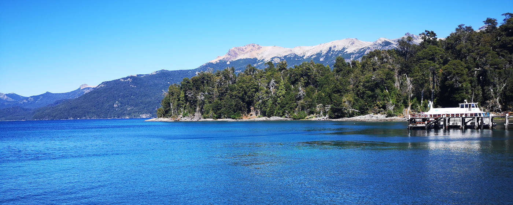
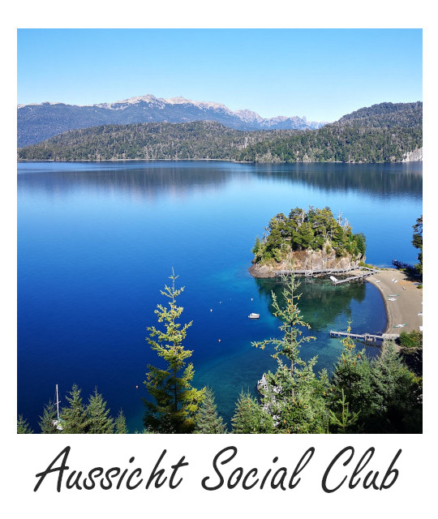

Entspannen am See - Reiseführer Villa La Angostura -
Villa La Angostura ist eine kleine, gemütliche Touristenstadt am Nahuel Huapi See gelegen. Besonders viele Argentinier fahren für ihren Sommerurlaub in diesen Ort, um ein paar Tage an den Stränden des Sees zu verbringen. Das Highlight der Stadt ist der angrenzende Los Arrayanes Nationalpark, wo man die mittlerweile seltenen Arrayán-Myrtenbäume bestaunen kann.

ToDo

1. Parque Nacional Los Arrayanes
Die immergrünen Arrayán-Myrtenbäume, die eine besonders schöne rote Rinde besitzen, haben auf der Quetrihué Halbinsel einen eigenen Nationalpark gewidmet bekommen. Besonders an der zum Wasser hinzeigenden Südspitze ist ein annähernd reiner Arrayán-Wald, der zum Schutz der Bäume von Stegen zum Wandern durchzogen ist. Der Eintritt des Nationalparks kostet 400 ARS und muss vor dem Betreten der Halbinsel an einer Holzhütte gekauft werden (Stand März 2020).
Es gibt unterschiedliche Möglichkeiten den Arrayán Wald zu besuchen. Ein zwölf Kilometer langer Fuß- und Fahrradweg führt über die Halbinsel, sodass man eine Tageswanderung durch den Nationalpark machen kann. Alternativ gibt es Bootstouren vom Puerto Angostura direkt an die Südspitze der Halbinsel. Es bietet sich an eine Strecke mit dem Boot zu fahren und die andere Strecke zu wandern. Entscheidet man sich für eine Bootsfahrt, muss man sich zwischen zwei Bootsanbietern entscheiden, die jeweils zu unterschiedlichen Zeiten abfahren. Ein Anbieter fährt auf der Westseite und der andere an der Ostseite entlang. Die aktuellen Abfahrtszeiten, sowie den Preis für die Cau Cau Fähre** findest du hier und für den Futaleufu Catamaran** hier.
♦ ♦ ♦
2. Strände und Wassersport
In der Gegend um Villa La Angostura gibt es zahlreiche Strände und für viele Argentinier wird das Örtchen für den Sommerurlaub im eigenen Land genutzt. Durch die Halbinsel Quetrihué bildet sich die Bucht Bahia San Patricio, die besonders geschützte Strände am Nahuel Huapi See bietet. Somit eignet sich der Ort auch um zwischen vielen aktiven Tagen etwas Ruhe zu finden. Besonders schöne Strände, direkt am Wald gelegen, sind an der Manzano Halbinsel.
In der Gegend gibt es viele Wassersportsmöglichkeiten: Die Bucht Bahia San Patricio eignet sich auf Grund des ruhigen Wassers perfekt fürs Stand Up Paddeling und zum Kayak fahren. Eine Übersicht der Verleihstationen findet man hier. Es werden auch organisierte Halb- und Ganztagestoures von Patagonia Infinita** angeboten. Segeltouren können über Patagonia Sailing** gebucht werden.
♦ ♦ ♦
3. Ausritt in die Natur
Das Glück der Erde liegt auf dem Rücken der Pferde. Und damit man in Patagonien auch ein wenig die Landschaft aus einer anderen Perspektive kennenlernt, gibt es in Villa La Angostura die Möglichkeit über mehrere Anbieter Ausritte in die von Seen und Wälder dominierte, wunderschöne Natur zu machen. Anbieter sind Sergio Engemann** und Cabalgatas y Cuatriciclos Montahue**.
♦ ♦ ♦

Good to know
Anreise
Es gibt täglich mehrere Busse von Bariloche nach Villa La Angostura mit dem Anbieter Via Bariloche**.
Insgesamt bietet es sich besser an, ein Auto in Bariloche zu mieten und mit diesem nach Villa La Angostura und dann weiter durch das Sieben Seen Gebiet, bis nach San Martín de los Andes zu fahren. Auf der gesamten Strecke ist der Weg das Ziel. Mit dem eigenen Auto kann man die vielen, kleinen Abzweigungen zu den einzelnen Seen und verlassenen Stränden hervorragend erkunden.
Von A nach B
Es gibt stündliche Busse zwischen dem Busbahnhof in Villa La Angostura und dem Puerto Manzano. Innerhalb der Stadt kann man alle Distanzen zu Fuß zurücklegen.
Unterkünfte
Eine schöne, preisgünstige Unterkunft am Ortseingang mit Privatzimmern ist das Departamentos de El Mercado**. Wer ein Hostel bevorzugt findet eine gemütliche Unterkunft im Hostel La Angostura**.
Essen und Trinken
Etwas außerhalb und nicht allzu leicht zu finden, da die Auffahrt eher eine Schotterpiste ist und nicht mehr viel Verwandtschaft mit einer Straße hat, ist das Restaurant Mirador Social Club**. Das Besondere dieses Restaurants ist die perfekte Lage, um Sonnenuntergänge über den See zu beobachten.

Marys Meinung
Das Städchen Villa La Angostura ist ein gemütliches Städtchen am Start der Route durch das Sieben Seen Gebiet. Auf einem Roadtrip von Bariloche nach San Martín de los Andes bietet es sich an, eine Nacht in Villa La Angostura zu verbringen und den Ausflug in den Los Arrayanes Nationalpark zu machen. Sollte man allerdings nur begrenzte Zeit in Patagonien haben sind die Ziele Bariloche und El Bolsón eher einen Besuch wert.
Ich war für zwei Nächte in der Stadt und es war schön, aber nicht das Highlight meiner Nordpatagonienrundreise.

**Das genannte Unternehmen ist eine Empfehlung meinerseits. Ich habe KEINE Gegenleistung von diesem erhalten.